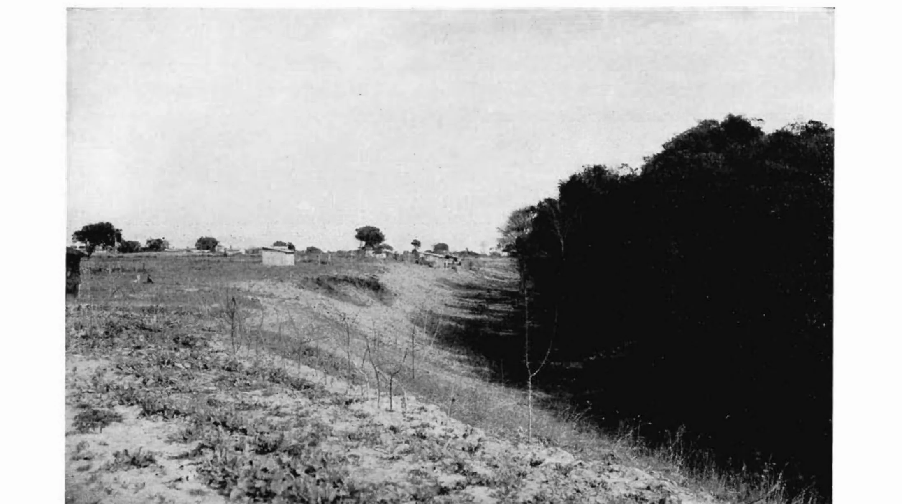
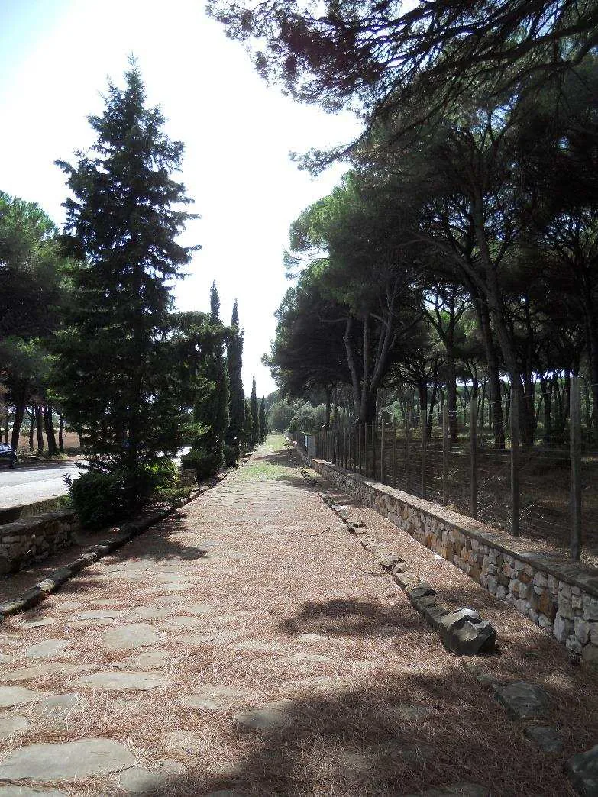
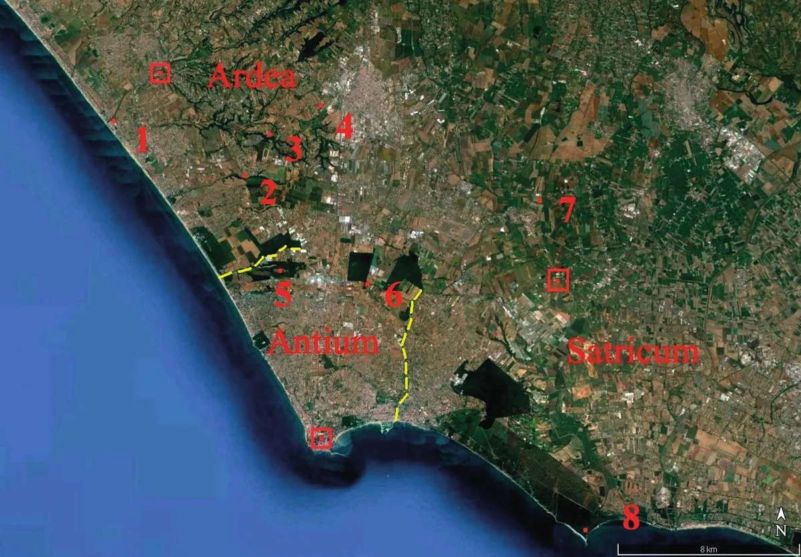
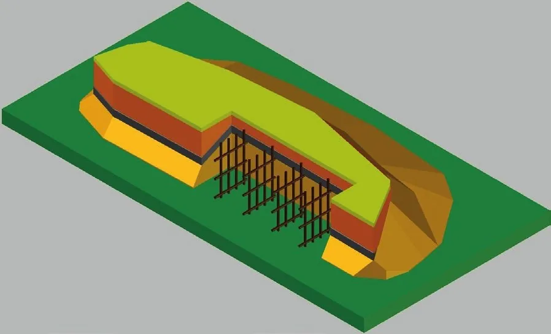
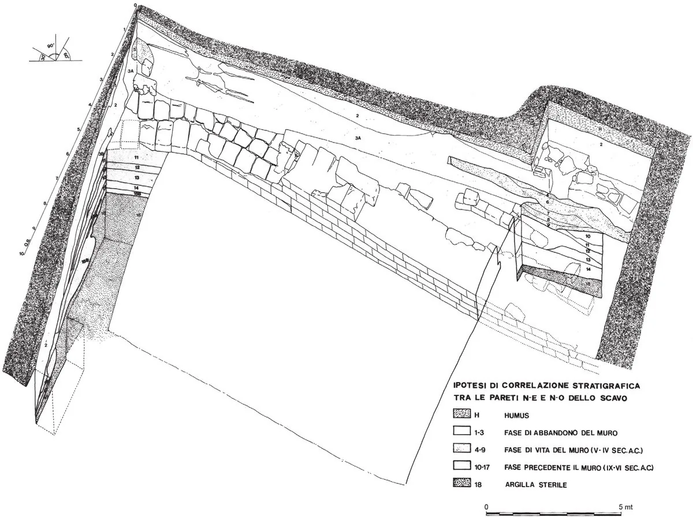

Il Vallo di Antium
Un muro di terra alzato dai Latini nella prima età del Ferro, rinforzato in età arcaica e arrivato fino a noi, quasi quattro chilometri attorno alla città.
Come può un monumento portare il nome di un popolo arrivato secoli dopo la sua costruzione? È la prima stranezza del cosiddetto «Vallo Volsco» di Anzio. Quel nome si è depositato nella tradizione locale come un fossile nel macco, ma è sbagliato. L'architetto Paolo Prignani, che ha studiato a lungo il territorio anziate, propone «Vallo Italico-Tirrenico»; questa guida lo chiama vallo latino-tirrenico, perché gli scavi indicano come costruttori i Latini della costa, prima dei Volsci.
Gli scavi spiegano perché. Nel 1980, sotto il muro in blocchi, è comparso uno strato di materiali della prima età del Ferro: per gli archeologi la prima difesa fu alzata tra il IX e l'VIII secolo a.C. I Volsci si stabilirono qui solo nel V secolo. Tre secoli dopo, almeno. (Le date ancora più antiche, l'XI secolo, vengono da Colle Rotondo, otto chilometri più a nord: ne parliamo più avanti.)
E poi la seconda stranezza. Antium viveva di mare: il Tirreno su due lati, un porto naturale che già gli autori antichi conoscevano. Eppure il suo muro più alto, il terrapieno più massiccio, guardava dall'altra parte. Verso la terra. Verso Satrico, Ardea, Aricia, Lanuvio. Perché una città di mare si difendeva dalla campagna? Chi alzò quel terrapieno sapeva bene da che parte arrivava il pericolo.
Il luogo come personaggio
La città antica stava a monte di quella di oggi, «sopra un arco di arenaria», scrivono Cifani e Guidi: sul pianoro delle Vignacce, alto in media 45 metri sul mare, dove oggi c'è il quartiere di Santa Teresa. Verso il mare non servivano mura: dal faro al Semaforo, nota Lugli, la roccia cade a picco e difende da sola anche il porto. Già nell'VIII secolo a.C. Antium era un abitato fortificato di 25 ettari.
La parete del vallo è macco: granuli di calcare cementati insieme a resti di animali marini. Avvicinati alla parete e ti accorgi dei fossili. Non sono decorazioni: sono la memoria di un fondale preistorico, rimasta nel corpo stesso della fortezza. La città, letteralmente, è costruita sul fondo di un mare che non esiste più.
La struttura: tre strati sovrapposti nel tempo
Lo studio di riferimento rimane il «Saggio sulla Topografia dell'Antica Antium» di Giuseppe Lugli. Lugli descrisse questa fortificazione «così semplice e primitiva», che però «si fa ancora ammirare per la perfetta tecnica costruttiva e per la sua conservazione più unica che rara in tutto il mondo romano, dato il perimetro tanto considerevole».
Il Vallo era un sistema a componenti distinte, costruite in epoche diverse ma organizzate in un unico organismo difensivo:
- La fossa esterna, larga circa 20 metri (due terzi della fossa dell'Aggere Serviano di Roma), era il primo ostacolo. La terra scavata veniva gettata verso l'interno, secondo la tecnica latina agger et fossa: fossa e terrapieno, fatti con la stessa terra.
- L'aggere, il terrapieno di terra di riporto. Verso la campagna, scrive Lugli, il livello restava più basso, ma il ciglio era ancora più verticale, «per ostacolare ai nemici la discesa». Nel 1889 un saggio del Genio militare dimostrò che la parte alta è artificiale: fatta con i frantumi di macco cavati dal fossato.
- Il muro interno in opera quadrata arrivò dopo, per contenere la spinta della terra. Nel tratto rimesso in luce da un taglio stradale negli anni Trenta, Lugli contò quattro filari d'altezza per due di larghezza, con blocchi di circa 60×80 cm. I saggi della Soprintendenza (1980–1981) ne hanno riportato alla luce un tratto di 29,50 metri, in blocchi di macco: dopo 17 metri dritti, il muro piega verso l'esterno di circa 20 gradi.
Il perimetro totale misura circa 3.900 m (quasi quattro chilometri), in forma di trapezio irregolare con due lati rettilinei verso il mare e due ricurvi verso l'interno.



Del muro in blocchi restavano tracce anche altrove, ma quasi tutte ormai le conosciamo solo dalle carte. Eschinardi e Nibby ricordavano alle Vignacce mura «costrutte di grossi massi quadrilateri, irregolarmente disposti, di pietra locale», in cui «vi si riconosce apertamente un angolo del recinto». Nel 1940 non si vedevano più. Nibby aggiungeva un dettaglio prezioso: parte di quelle vestigia erano state «di recente scoperte in uno scavo fatto dal sig. Mencacci». La riscoperta del vallo, insomma, non comincia con Lugli. Comincia nell'Ottocento, tra proprietari terrieri, scavatori dilettanti e studiosi.
Lugli, però, i blocchi li vide ancora: incorporati nel muro di cinta della ex villa Albani, verso il mare, e alti sei metri nel taglio della strada che sale alla stazione, fin sotto il terrapieno della ex villa Pamphilj. Un quarto tratto venne fuori nella primavera del 1939, mentre qualcuno costruiva abusivamente una casa colonica proprio sul ciglio orientale del vallo. Fu quell'episodio a strappargli la frase amara sui danni del Novecento che leggerai più avanti.
Le porte della città
«Le porte che si possono identificare ancora oggi son tre», scrive Lugli. La sua è una ricostruzione topografica, fatta leggendo il terreno e le strade.
- Porta settentrionale, la più importante: «la prima, e la più importante, era quella verso Roma, per cui entrava la via Anziatina, congiunta poco prima con la via Severiana, per passare attraverso una porta unica». All'interno, la strada proseguiva in asse nord-sud formando il cardine urbano, il cui tracciato corrisponde all'odierna Via Roma: duemilacinquecento anni di continuità viaria.
- Porta Aurea, «al termine sud della via, quasi a contatto col mare»: la fine naturale del cardine urbano. Il nome è tramandato dalla tradizione, non da epigrafi. Ma è una tradizione documentata: già Lombardi lo trovava «da tempo immemorabile» negli antichi strumenti dell'archivio comunale. Lui, però, la leggeva diversamente: non una porta urbana, bensì l'ingresso principale della villa dei Cesari, sul cui ripiano la stradetta sboccava. Lugli la ricondusse invece al circuito della città: le due letture convivono ancora.
- Terza porta sul decumano (asse est-ovest), dove la via Severiana usciva dalla città verso Astura. Lugli la metteva «in corrispondenza del ponte sulla ferrovia», sul viale che dalla via Roma porta alla stazione. Fuori città, vicino a via Bengasi, della Severiana restano circa ottanta metri di strada lastricata «parallela alla sede ferroviaria moderna» (Di Mario e Jaia). All'incrocio tra cardine e decumano, Lugli colloca il Foro della città, ma su quel punto, ammette, «il terreno è sotto questo riguardo completamente muto».
Una postierla (porta secondaria) è suggerita da una «calatora tracciata obliquamente nel vallo» verso la metà del semicerchio settentrionale. Il porto volsco, detto Caenon, citato da Livio e da Dionigi, rimase sempre all'esterno della cinta difensiva: «la città non scese mai fino alla riva del mare per ragioni di difesa».
Che cosa vuol dire Caenon, il nome del porto volsco? L'erudito Giovanni Matteucci, nel 1872, lo faceva venire dal latino coenum, «fango»: un porto «di basso fondo, e perciò fangoso». Un'ipotesi dell'Ottocento, per uno scalo che ancora non sappiamo con certezza dove fosse.
Pirro Ligorio lo metteva dove oggi c'è Nettuno, e così fecero il Cluverio e l'Olstenio, «senza tener conto», nota Lugli, «della impossibilità in quel sito di un comodo ormeggio». Altri arrivarono fino a Satrico. Lombardi obiettava che a Nettuno «non avvi colà vestigio che accenni esservi mai stato alcun porto». Con il Nibby lo collocava ai piedi dell'allora villa Mencacci, dove dietro l'emiciclo del cosiddetto teatro si vedeva un avanzo di mura in grandi massi bugnati, in cui ravvisava «tutta la maniera etrusca».
Lugli scelse la soluzione più semplice: il porto volsco stava dove poi nacque quello imperiale, un'insenatura riparata da due piccoli promontori, gli stessi a cui Nerone attaccò i moli. La Treccani (Enciclopedia dell'Arte Antica) segnala invece l'area dell'approdo preromano, ormai interrata, a nord di quella del porto romano. E nel 2000 Paola Brandizzi Vittucci lo ha riportato verso Nettuno: nel «Pantano» delle carte antiche, alla foce del fosso Loracina, una bassura paludosa da cui verrebbe anche il nome (caenum, «fango»). Quattro secoli di ipotesi.
Lugli segnala una veduta del XVII secolo, in un codice della Collezione Corsini oggi in Vaticano, che mostra Anzio «completamente disabitata e deserta», con le sole eccezioni della torre medievale e del castello della famiglia principesca dei Corsini, poi Aldobrandini. È l'istantanea del punto più basso della storia del sito: tra l'abbandono altomedievale e la rinascita settecentesca, sul pianoro della città volsca non viveva più nessuno.
Anche la rocca della città divide gli studiosi. Gli eruditi dell'Ottocento la mettevano sull'altura della villa Borghese, già Costaguti. Lugli smontò l'ipotesi con tre argomenti. L'altura dista circa settecento metri dalla città, e il palazzo Borghese 1.200 metri dal vallo orientale; tra lei e la città corrono due dorsali divise da fossi, che spezzerebbero la difesa; e il palazzo Borghese sta a quota 38, mentre parte della città supera i 40. Un'acropoli più bassa della città che dovrebbe proteggere?
Per Lugli la rocca era una «collina lunga e stretta» all'estremo orientale, senza mura proprie, perché bastavano quelle della città. Il terreno, per ora, non ha deciso.
Prima di Lugli e dei saggi di scavo, Lombardi aveva già capito la valletta. La piccola valle che dal palazzo Panfili-Doria gira verso la via Romana, scriveva nel 1847, «si vede assai chiaro essere stata artefatta ad uso di fossa che girava attorno le mura»; e qua e là segnalava i «massi quadrilateri di pietra arenaria locale» rimasti in piedi. Il Nibby allargava la città volsca fino alla villa già Costaguti. Lombardi no: sulla base di «varie osservazioni locali», la cerchia primitiva era per lui «assai più ristretta». È, in sostanza, la stessa conclusione dell'archeologia del Novecento.
Nel 1897, a 52 metri dall'ingresso della villa Borghese, nell'area di Villa Adele, venne fuori un «tratto di antichissima muraglia, formato di tre ordini di massi regolari». Lugli lo lasciò fuori dal circuito della città: troppo lontano, «va piuttosto identificato come un terrazzamento di villa». Tra il 2022 e il 2024 la Sapienza ha scavato proprio a Villa Adele, e ha trovato le sostruzioni di una residenza di età imperiale. Il muro del 1897 era un terrazzamento, come pensava Lugli, o un pezzo della cinta? Resta da capire.
Le strade che entravano dal vallo
Da dove arrivava chi veniva ad Antium da nord? Dai Colli Albani scendeva al mare una strada che le fonti locali chiamano via Antiatina o via Astura. Thomas Ashby la descrisse come «una strada basolata con forte pendenza, che nel sistema di circonvallazione lanuvina, costituiva il collegamento a nord con la via Appia e a sud con il litorale di Anzio». E c'è una seconda strada: la via Lanuvio-Anzio, che Lanciani individuò per primo nel 1892, lunga circa venti miglia. Due strade, o una sola con due nomi? Non si è mai trovata una pietra miliare, e per questo le due vengono spesso identificate.
Entrando ad Antium, per Lugli, le strade da nord passavano dal vallo, dalla porta verso Roma, dove la via Anziatina si era già unita alla Severiana.
Su quella strada si cammina ancora. A Ponte Loreto, presso Lanuvio, restano 250 metri di basolato largo circa quattro metri, del II–I secolo a.C.: fu Ashby a dimostrare che quella strada portava ad Anzio. Più a sud, nell'entroterra di Nettuno, dentro la pineta della Campana, corre la Selciatella: circa cinquecento metri di lastre di selce vulcanica, con una carreggiata di quattro metri, ancora intatta nel XII secolo. Il Comune di Nettuno l'ha restaurata nel 2002. Oggi è di nuovo abbandonata, tra l'incuria e i rifiuti.

Colle Rotondo: il territorio difeso attorno ad Antium
Il vallo di Antium non era solo. Otto chilometri più a nord, nella fascia tra Ardea e Anzio, c'è il pianoro di Colle Rotondo: otto ettari che dal 2009 hanno restituito una delle sequenze di difese più antiche di tutto il Lazio latino. Lo indagano insieme tre università romane, Roma Tre, Tor Vergata e La Sapienza (con Guidi, Cifani e Jaia).
Il pianoro, però, si conosceva da tempo. Negli anni Sessanta lo individuò dall'alto Dinu Adamesteanu, uno dei padri dell'archeologia aerea; poco dopo Alessandro Fioravanti raccolse materiali in superficie (1967), e negli anni Ottanta passarono di lì Lorenzo e Stefania Quilici. Nel 2009 la ricognizione delle tre università, dal 2010 lo scavo. Mezzo secolo tra la prima foto e il primo saggio.
A cosa serviva? Per Cifani e Guidi era un avamposto di Anzio verso Ardea. Funzionava come nelle città-stato latine: un centro maggiore e villaggi fortificati lungo i confini, qui segnati dal fosso di Sant'Anastasia (se vuoi vederli, sono nella mappa qui sotto). Una rete di fortezze satelliti attorno a una città madre.

L'aggere orientale e la struttura lignea (XI–X sec. a.C.)
Nel 2005 le arature meccanizzate cancellarono quasi tutta la fase arcaica dell'aggere orientale. Un danno enorme. Eppure, scavando quello che restava, la campagna del 2010–2014 trovò qualcosa di ancora più antico: una difesa protostorica fatta di pali e travi di quercia carbonizzati. Risalgono all'XI–X secolo a.C.

Era un nucleo di terra compatta. Fuori lo copriva uno strato di carboni e di terra cotta dal fuoco; dentro lo armava un graticcio di pali verticali e orizzontali (i cervoli dei trattati militari romani), poi sepolti sotto altra terra battuta. Con ogni probabilità è la più antica struttura difensiva trovata finora in area latina. Chi la costruì, tremila anni fa, sapeva già come si tiene in piedi un muro di terra.

L'aggere occidentale: fasi arcaica e medio-repubblicana
L'aggere occidentale, scavato nel 2011–2012, ha almeno due fasi. In epoca arcaica (VIII–VI secolo a.C.) qualcuno lo armò con un fossato e lo rivestì di blocchi di tufo granulare, di circa 0,83×0,78×0,26 metri. Il fossato originale era largo circa 3,5 metri e profondo almeno 2.
Nello strato di fondazione del muro c'erano frammenti di ceramica arcaica e una ciotolina d'argilla in miniatura: un'offerta votiva, come quelle trovate presso porte e soglie in tutta l'area tirrenica. Costruire un muro non era solo un lavoro tecnico. Era un atto sacro, e quella ciotolina è rimasta lì sotto per 2.600 anni.
Sul fondo del fossato, poi, un piccolo pozzo di drenaggio scavato nella sabbia, largo poco meno di un metro, pieno di un paio di centinaia di frammenti di tegole e coppi. Le tegole lo datano al V secolo a.C.
Nel VI secolo a.C. i due terrapieni lavoravano insieme, come confine esterno e interno dello stesso abitato. Quello occidentale chiudeva una piccola rocca di circa due ettari, affacciata sul mare e sull'approdo in una laguna oggi prosciugata, alla foce del fosso di Sant'Anastasia; fuori si stendevano i circa sei ettari protetti dall'aggere più vecchio. Nell'età del Bronzo, scrivono Cifani e Guidi, il sito controllava un nodo di strade tra la costa e i Colli Albani. Un avamposto, non un villaggio qualunque.
Poi, in epoca medio-repubblicana (IV–III secolo a.C.), chi allargò il fossato fino a 3,96 metri tagliò il vecchio pozzo arcaico. Sul ciglio dell'aggere è comparsa una struttura circolare di circa sei metri di diametro. Dentro, ceramica a vernice nera e un aes rude (un pezzo di bronzo grezzo usato come moneta) del IV–III secolo. È lo stesso periodo in cui l'abitato si svuota. Colpa della Guerra Latina, finita nel 338 a.C.? È l'ipotesi più probabile.

Leggere il vallo nella città moderna
Chi conosce il tracciato del vallo può riconoscerlo ancora nella città di oggi. Lugli lo percorse tutto nel 1940, e la sua descrizione resta la guida migliore.
Si parte dal ciglio sul mare, vicino al Faro di Capo d'Anzio. Per Lugli il vallo cominciava proprio sotto il Semaforo della Marina, sul ciglio a picco sul mare, e la via moderna che lo fiancheggiava lo tagliava. Poi arrivava alla via Anziatina segnato dal muro di cinta di Villa Sarsina, oggi sede del Comune, «poggiato sul ciglio interno»; la fossa era «una forte depressione fra il muro stesso e la via parallela».
Qui Lugli scrive con amarezza: «Il nuovo tracciato della via Anziatina e il passaggio della ferrovia elettrica hanno distrutto il vallo per circa 200 metri». Un tratto, però, si vedeva ancora accanto al serbatoio centrale dell'acqua, in via Roma.
Passata la ferrovia, vallo e fossa ricompaiono per più di un chilometro e mezzo, davanti al cimitero e verso il Santuario di Santa Teresa: nel 1940 Lugli li vide «nella loro quasi integrità». Oggi quel tratto è il Parco del Vallo Latino-Volsco.
Il lato settentrionale è il meglio conservato: dal ponte della Via Anziatina sulla ferrovia, il vallo si snoda per oltre un chilometro e mezzo verso est, «poderosa difesa della città volsca verso l'interno e particolarmente verso Satrico, Ardea, Aricia, Lanuvio».
Il saggio del 1889
Nel 1889 il Genio militare doveva costruire il Semaforo «presso la estrema punta dell'arco Muto, che costituisce il capo d'Anzio propriamente detto». Prima fece due saggi nel terreno, e Rodolfo Lanciani ne scrisse il resoconto nelle Notizie degli Scavi. Il primo, «sul ciglio dell'aggere», dimostrò che la parte alta del terrapieno è artificiale, «formata cioè con i frantumi di pietra arenaria (macco) estratti dallo scavo del fossato». Il secondo, vicino al teatro, riportò in luce due stanze, una con un mosaico in bianco e nero così bizzarro che Lanciani dovette tentare più volte «prima di trovare il bandolo del disegno».
Non un semaforo stradale. Lugli lo chiama «Semaforo della R. Marina»: una stazione della Regia Marina sul ciglio della costa.
Per Lugli il vallo «aveva inizio proprio al di sotto del Semaforo», nel punto in cui la costa cadeva a piombo sul mare, a 18 metri sull'acqua. Per questo lo usa come capolinea del vallo.
Gli scavi scientifici
Il sopralluogo Guaitoli (1980) e i saggi 1980–1981
Tutto riparte dal 1980. Marcello Guaitoli, dell'Istituto di Topografia Antica della Sapienza, esplorò il vallo e aprì un piccolo saggio. Sotto il muro arcaico in blocchi trovò uno spesso strato di materiali delle fasi IIB–III della cultura laziale, cioè della prima età del Ferro. Per lui l'aggere era stato costruito nell'VIII secolo a.C. La campagna del 1980–1981 recuperò poi il tratto di muro di 29,50 metri con la piega di 20 gradi. E uno strato scuro, pieno di carboni, ossa di animali, bronzi e ceramiche, tra la fase laziale III e l'inizio della IVA.

Il muro messo in luce nel 1980–81 è in blocchi di macco, disposti a filari alterni. La Treccani parla di un tratto lungo più di 25 metri, conservato in alcuni punti per cinque filari; Cifani e Guidi danno 29,50 metri, con la piega di circa 20° dopo i primi 17.

I saggi Egidi-Guidi
I saggi di Roberto Egidi e Alessandro Guidi (2009) pubblicano e contestualizzano i dati degli scavi 1980–81 della Soprintendenza Archeologica del Lazio: da loro vengono l'assonometria e le fotografie del muro qui sopra.
Lo scavo di Via del Teatro Romano (2021)
Nell'estate del 2021, in un terreno privato tra via delle Roselle e via del Teatro Romano, a Santa Teresa, a meno di duecento metri dal teatro, gli archeologi incaricati dai proprietari hanno scavato per due mesi, in contatto con la funzionaria della Soprintendenza Gemma Carafa Jacobini.
La cosa più antica emersa sono almeno quattro sepolture arcaiche (VII–V secolo a.C.), con scheletri e corredi, a circa due metri di profondità, vicino a quello che sembra un abitato arcaico. Sopra, i resti di età romana repubblicana: condotte d'acqua, le basi di alcuni silos, una piccola fornace forse per laterizi e un edificio rettangolare in blocchi.
Le notizie vengono dalle cronache dell'agosto 2021 (Il Messaggero, Canale Dieci, Il Caffè). I dati scientifici, preliminari, li hanno pubblicati Abbondanzieri, D'Ammassa, Gerardi, Manna e Vaccaro in Lazio e Sabina 13.
Gli scavi a Villa Adele (2022–2024)
La Missione Archeologica della Sapienza ad Anzio, diretta da Alessandro Maria Jaia, ha lavorato a Villa Adele dal 2021: un'ispezione speleologica nel luglio 2022, poi gli scavi dal settembre 2023, con un finanziamento del Comune. Tre gallerie, unite da una quarta, si raggiungevano solo da un pozzo di aerazione profondo circa sette metri; a nasconderne l'ingresso era un riempimento di alcune migliaia di metri cubi, scaricato quando il giardino della villa fu trasformato in pineta. Sono le sostruzioni di una residenza di età imperiale. Jaia e Laura Ebanista ne hanno pubblicato i primi risultati nel 2024 («Anzio, villa comunale: un nuovo complesso residenziale sostruito di età imperiale», Scienze dell'Antichità 30.1). Su questa collina, in età imperiale, si costruiva ancora: sopra la città volsca, sopra quella repubblicana.
Criticità e stato di conservazione
Nell'ultimo secolo il vallo ha sofferto più che in tutti i millenni prima. Paolo Prignani lo ha denunciato nel 2014: «nonostante decreti ministeriale e vincoli archeologici il vallo è stato invaso dall'abusivismo», e «è stato fatto più danno a tale sito archeologico (come ad altri) nell'ultimo secolo per opera dell'uomo che nei millenni precedenti». Lugli lo scriveva già nel 1940, dopo la casa abusiva del 1939 sul ciglio: il vallo, «il quale ha sofferto più in questi ultimi anni che non durante ventitrè secoli».
Nel 2005, a Colle Rotondo, sbancamenti e arature cancellarono quasi tutta la fase arcaica dell'aggere orientale. Un danno. E un paradosso, che raccontano Cifani e Guidi: proprio quella distruzione ha scoperto, sotto, la difesa più antica. Da qui la loro domanda: e se anche in altre città latine l'aggere arcaico ne nascondesse uno più antico?
Tabella delle corrispondenze: ieri e oggi
| Luogo di Anzio | Cosa descriveva Lugli | Cosa si trova oggi |
|---|---|---|
| Via Fanciulla d'Anzio | «Al di sotto del Semaforo… a piombo sul mare» | Inizio del vallo; saggio del Genio militare del 1889 (aggere di macco) |
| Villa Sarsina (sede del Comune) | «Muro di limite della villa poggiato sul ciglio interno» | Il muro di cinta sul ciglio; la fossa tra il muro e la via |
| Via Roma | Via Anziatina, ingresso dalla Porta nord | Identico tracciato N–S conservato per 2.500 anni |
| Via Roma (serbatoio dell'acqua) | «Distrutto il vallo per circa 200 m» | Nuova via Anziatina e ferrovia elettrica; un piccolo tratto superstite accanto al serbatoio |
| Parco del Vallo Latino-Volsco | «Oltre un chilometro e mezzo… quasi integrità» | Aggere e fossa davanti al cimitero, verso Santa Teresa |
| Colle Rotondo (8 km N) | · | Due aggeres (XI sec. a.C. – IV sec. a.C.); aggere orientale distrutto 2005 |
Cronologia essenziale del Vallo e del territorio
| Datazione | Evento |
|---|---|
| Bronzo Medio 2 | Occupazione del pianoro di Colle Rotondo (livello più antico sotto le fortificazioni) |
| XI–X sec. a.C. | Prima struttura difensiva lignea a Colle Rotondo: la più antica in area latina |
| IX–VIII sec. a.C. | Prima opera difensiva ad Antium, nella prima età del Ferro (materiali laziali IIB–III sotto il muro; per Guaitoli aggere dell'VIII sec.) |
| VIII sec. a.C. | Antium è già un abitato fortificato di 25 ettari |
| VIII–VI sec. a.C. | Aggere occidentale di Colle Rotondo con fossato e blocchi in tufo; depositi votivi presso la struttura muraria |
| Inizio V sec. a.C. | Costruzione del muro in opera quadrata ad Antium (Treccani, Enciclopedia dell'Arte Antica) |
| IV–III sec. a.C. | Fossato di Colle Rotondo ampliato a 3,96 m; poi l'abbandono dell'abitato, forse dopo la Guerra Latina (338 a.C.) |
| 67–68 d.C. | Nerone, tornato dalla Grecia, entra ad Antium da vincitore attraverso una breccia nelle mura, come a Napoli (Svetonio, Nerone 25) |
| 1848 | Nibby pubblica l'Analisi storico-topografico-antiquaria: osservazione diretta delle vestigia murarie alle Vignacce |
| 1889 | Saggi del Genio militare per il Semaforo: l'aggere è fatto con il macco cavato dal fossato (Lanciani) |
| 1940 | Studio topografico sistematico di Lugli (RIASA, VII) |
| 1980–1981 | Sopralluogo Guaitoli; saggi Soprintendenza: tratto muro 29,50 m con piega 20°; strati laziali IIB–III |
| 2005 | Sbancamenti agricoli distruggono l'aggere orientale arcaico di Colle Rotondo |
| 2009 | Egidi e Guidi pubblicano i dati degli scavi 1980–81 sul vallo urbano |
| 2009–2014 | Ricognizione (2009) e scavi (2010–2014) a Colle Rotondo (Guidi, Cifani, Jaia): struttura lignea XI–X sec. a.C., aggere occidentale arcaico |
| 2021 | Scavi Via del Teatro Romano: quattro sepolture arcaiche (VII–V sec. a.C.) e sopra strutture romane repubblicane |
| 2023–2024 | Scavi Missione Sapienza a Villa Adele: sostruzioni di una residenza di età imperiale (Jaia–Ebanista 2024) |